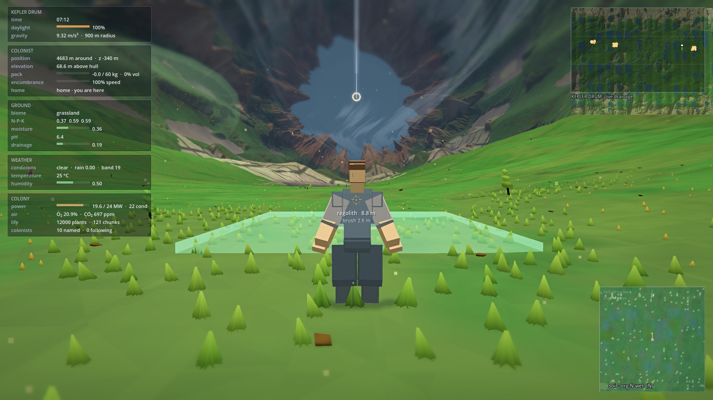
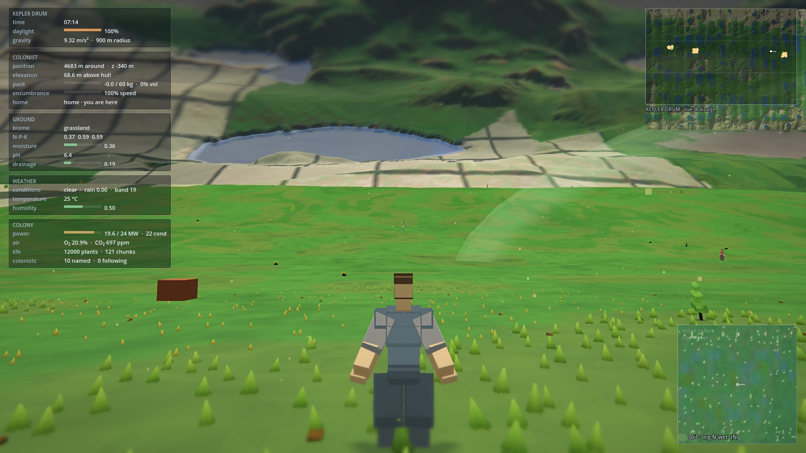
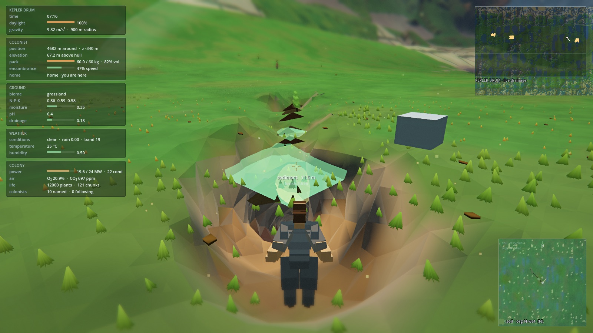
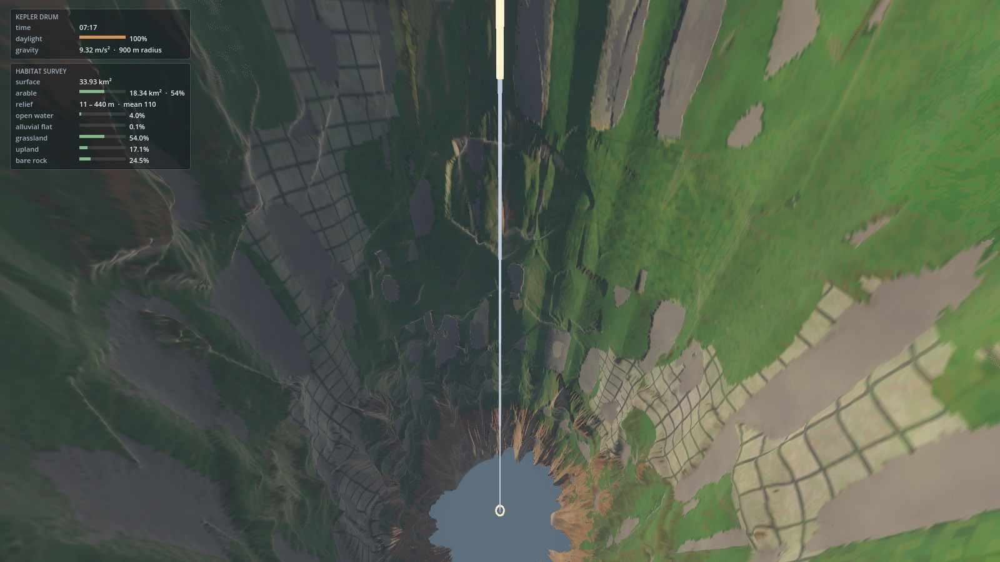
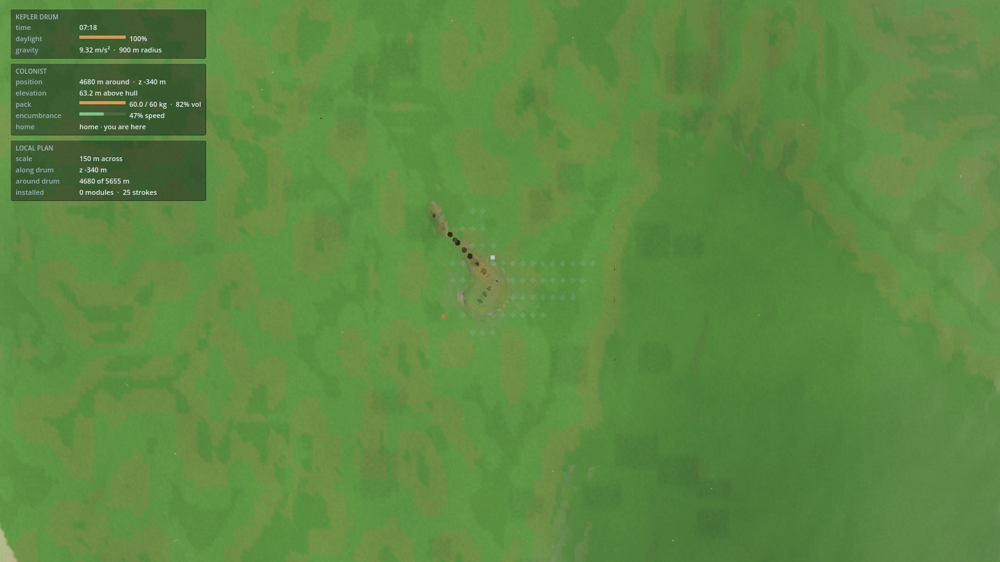
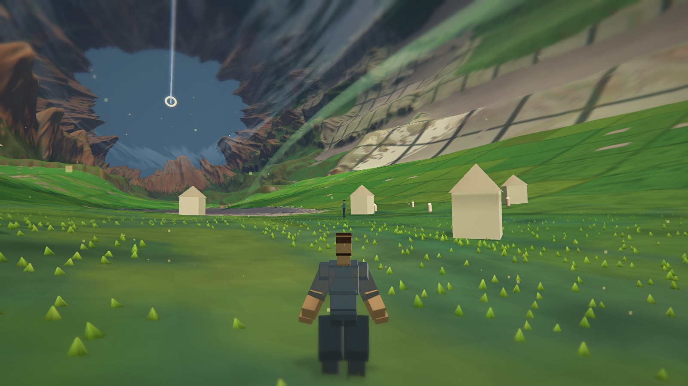
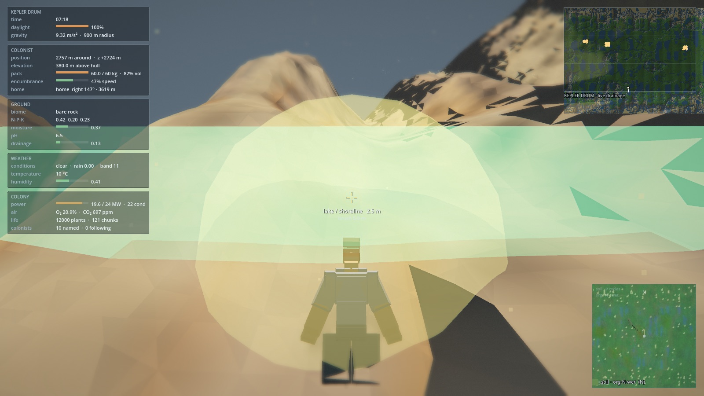

The world you can stand in: the inner surface of Kepler Drum — mountains, caves, and drainage under a sun that never sets the same way twice.
Prebuilt builds for macOS, Windows, Linux, Steam Deck, and low-spec Linux. First launch on macOS may need right-click → Open. Requires a GPU that can run Godot 4 Forward+ (Deck / low-spec defaults dial foliage and LOD down).
Wake outside the homestead, dig regolith, level plots, and look up — the other side of the world is always overhead.







One continuous ground: walk far enough and you return to where you started.